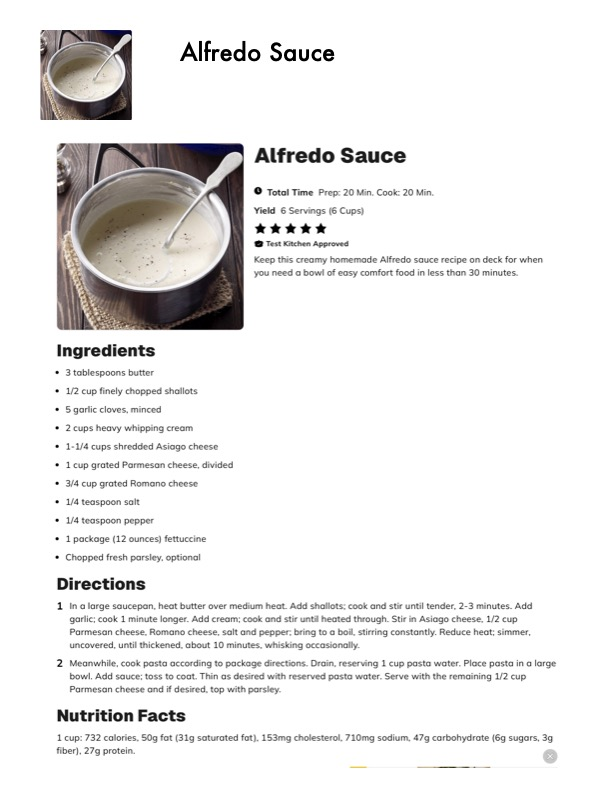

Alfredo Sauce

Original cookbook page 816
Ingredients
- * 3 tablespoons butter
- * 1/2 cup finely chopped shallots
- * 5 garlic cloves, minced
- * 2cups heavy whipping cream
- * 1-1/4 cups shredded Asiago cheese
- * 1cup grated Parmesan cheese, divided
- 3/4 cup grated Romano cheese
- 1/4 teaspoon salt
- 1/4 teaspoon pepper
- 1 package (12 ounces) fettuccine
- Chopped fresh parsley, optional
Instructions
- Ina large saucepan, heat butter over medium heat. Add shallots; cook and stir until tend garlic; cook 1 minute longer. Add cream; cook and stir until heated through. Stir in Asiag Parmesan cheese, Romano cheese, salt and pepper; bring to a boil, stirring constantly. R uncovered, until thickened, about 10 minutes, whisking occasionally. bowl. Add sauce; toss to coat. Thin as desired with reserved pasta water. Serve with the Parmesan cheese and if desired, top with parsley. Nutrition Facts 1 cup: 732 calories, 50g fat (31g saturated fat), 153mg cholesterol, 710mg sodium, 47g car fiber), 27g protein.
Recipe #816 from collection